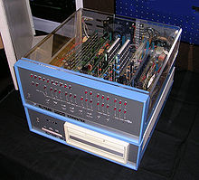
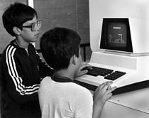

History of personal computers
1974 saw the introduction of what is considered by many to be the first true "personal computer", the Altair 8800 created by Micro Instrumentation and Telemetry Systems (MITS). Based on the 8-bit Intel 8080 Microprocessor, the Altair is widely recognized as the spark that ignited the microcomputer revolution[ as the first commercially successful personal computer. The computer bus designed for the Altair was to become a de facto standard in the form of the S-100 bus, and the first programming language for the machine was Microsoft's founding product, Altair BASIC.
In 1976, Steve Jobs and Steve Wozniak sold the Apple I computer circuit board, which was fully prepared and contained about 30 chips. The Apple I computer differed from the other kit-style hobby computers of era. At the request of Paul Terrell, owner of the Byte Shop, Steve Jobswas given his first purchase order, for 50 Apple I computers, only if the computers were assembled and tested and not a kit computer. Terrell wanted to have computers to sell to a wide range of users, not just experienced electronics hobbyists who had the soldering skills to assemble a computer kit. The Apple I as delivered was still technically a kit computer, as it did not have a power supply, case, or keyboard as it was delivered to the Byte Shop.
The first successfully mass marketed personal computer was the Commodore PET introduced in January 1977. However, it was back-ordered and not available until later in the year.[29] Five months later (June), the Apple II (usually referred to as the "Apple") was introduced,[30] and the TRS-80 from Tandy Corporation / Tandy Radio Shack in summer 1977, delivered in September in a small number. Mass-market ready-assembled computers allowed a wider range of people to use computers, focusing more on software applications and less on development of the processor hardware.
Somewhat larger and more expensive systems (for example, running CP/M), or sometimes a home computer with additional interfaces and devices, although still low-cost compared with minicomputers and mainframes, were aimed at office and small business use, typically using "high resolution" monitors capable of at least 80 column text display, and often no graphical or color drawing capability. Workstations were characterized by high-performance processors and graphics displays, with large-capacity local disk storage, networking capability, and running under a multitasking operating system. Eventually, due to the influence of the IBM PC on the personal computer market, personal computers and home computers lost any technical distinction. Business computers acquired color graphics capability and sound, and home computers and game systems users used the same processors and operating systems as office workers. Mass-market computers had graphics capabilities and memory comparable to dedicated workstations of a few years before. Even local area networking, originally a way to allow business computers to share expensive mass storage and peripherals, became a standard feature of personal computers used at home.
In 1982 "The Computer" was named Machine of the Year by Time magazine. In the 2010s, several companies such as Hewlett-Packard and Sony sold off their PC and laptop divisions. As a result, the personal computer was declared dead several times during this period.
|  |
|---|
| Altair 8800 Computer |
|  |
|---|
| Commodore PET in 1983 |
A documentary about the history of personal computers
Click here to watch the second episode of the documentary
Source:wikipedia